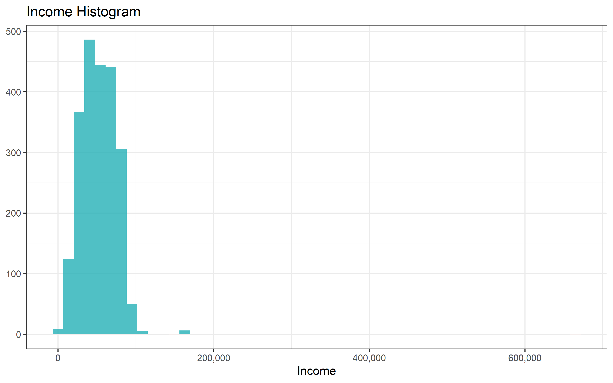
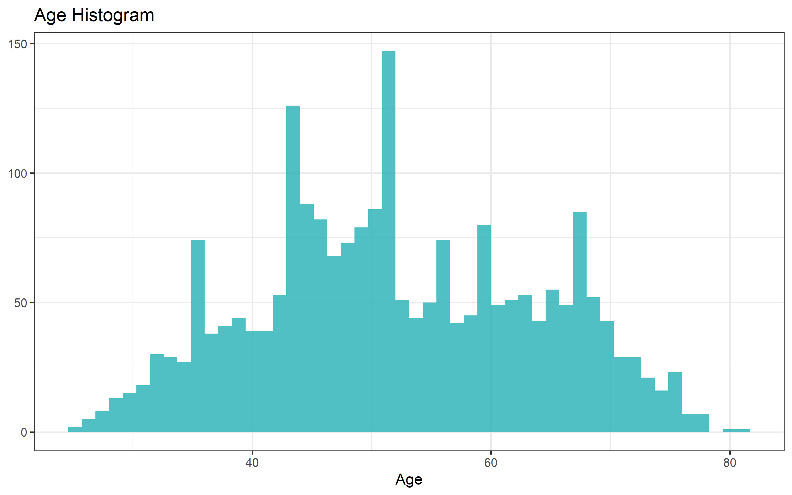
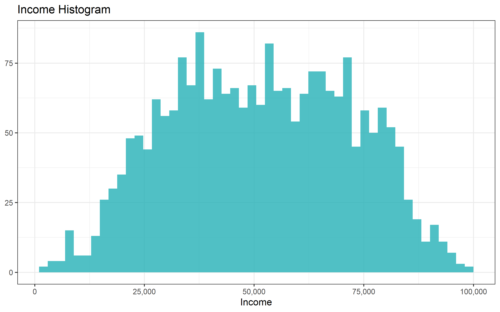
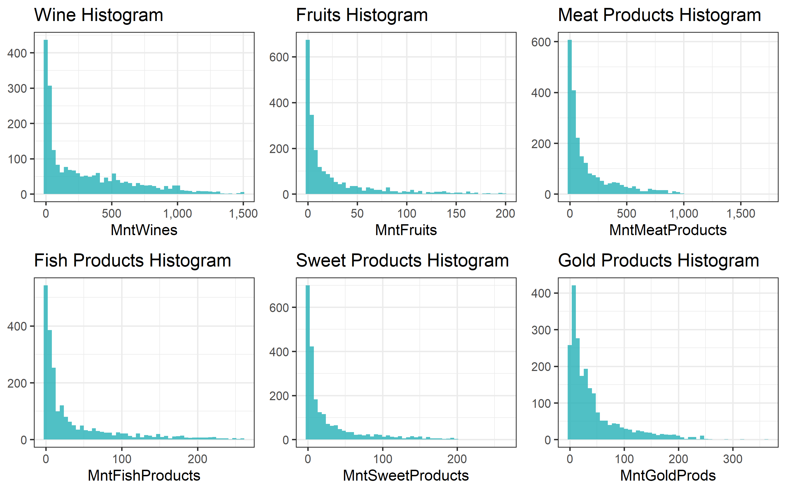
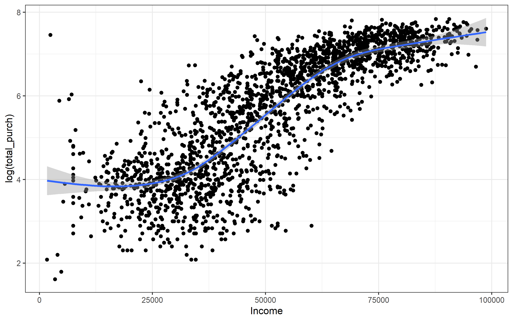

Let’s analyze the marketing data set provided by an user of Kaggle.
setwd("C:/Users/Daniel Gutierrez/Desktop/R Practice/Marketing Data Kaggle")
marketing_data <- readr::read_csv("marketing_data.csv")Simple summary statistics of the data sets to see what variables we have
summary(marketing_data)## ID Year_Birth Education Marital_Status Income
## Min. : 0 Min. :1893 Length:2240 Length:2240 Length:2240
## 1st Qu.: 2828 1st Qu.:1959 Class :character Class :character Class :character
## Median : 5458 Median :1970 Mode :character Mode :character Mode :character
## Mean : 5592 Mean :1969
## 3rd Qu.: 8428 3rd Qu.:1977
## Max. :11191 Max. :1996
## Kidhome Teenhome Dt_Customer Recency MntWines
## Min. :0.0000 Min. :0.0000 Length:2240 Min. : 0.00 Min. : 0.00
## 1st Qu.:0.0000 1st Qu.:0.0000 Class :character 1st Qu.:24.00 1st Qu.: 23.75
## Median :0.0000 Median :0.0000 Mode :character Median :49.00 Median : 173.50
## Mean :0.4442 Mean :0.5062 Mean :49.11 Mean : 303.94
## 3rd Qu.:1.0000 3rd Qu.:1.0000 3rd Qu.:74.00 3rd Qu.: 504.25
## Max. :2.0000 Max. :2.0000 Max. :99.00 Max. :1493.00
## MntFruits MntMeatProducts MntFishProducts MntSweetProducts MntGoldProds
## Min. : 0.0 Min. : 0.0 Min. : 0.00 Min. : 0.00 Min. : 0.00
## 1st Qu.: 1.0 1st Qu.: 16.0 1st Qu.: 3.00 1st Qu.: 1.00 1st Qu.: 9.00
## Median : 8.0 Median : 67.0 Median : 12.00 Median : 8.00 Median : 24.00
## Mean : 26.3 Mean : 166.9 Mean : 37.53 Mean : 27.06 Mean : 44.02
## 3rd Qu.: 33.0 3rd Qu.: 232.0 3rd Qu.: 50.00 3rd Qu.: 33.00 3rd Qu.: 56.00
## Max. :199.0 Max. :1725.0 Max. :259.00 Max. :263.00 Max. :362.00
## NumDealsPurchases NumWebPurchases NumCatalogPurchases NumStorePurchases NumWebVisitsMonth
## Min. : 0.000 Min. : 0.000 Min. : 0.000 Min. : 0.00 Min. : 0.000
## 1st Qu.: 1.000 1st Qu.: 2.000 1st Qu.: 0.000 1st Qu.: 3.00 1st Qu.: 3.000
## Median : 2.000 Median : 4.000 Median : 2.000 Median : 5.00 Median : 6.000
## Mean : 2.325 Mean : 4.085 Mean : 2.662 Mean : 5.79 Mean : 5.317
## 3rd Qu.: 3.000 3rd Qu.: 6.000 3rd Qu.: 4.000 3rd Qu.: 8.00 3rd Qu.: 7.000
## Max. :15.000 Max. :27.000 Max. :28.000 Max. :13.00 Max. :20.000
## AcceptedCmp3 AcceptedCmp4 AcceptedCmp5 AcceptedCmp1 AcceptedCmp2
## Min. :0.00000 Min. :0.00000 Min. :0.00000 Min. :0.00000 Min. :0.00000
## 1st Qu.:0.00000 1st Qu.:0.00000 1st Qu.:0.00000 1st Qu.:0.00000 1st Qu.:0.00000
## Median :0.00000 Median :0.00000 Median :0.00000 Median :0.00000 Median :0.00000
## Mean :0.07277 Mean :0.07455 Mean :0.07277 Mean :0.06429 Mean :0.01339
## 3rd Qu.:0.00000 3rd Qu.:0.00000 3rd Qu.:0.00000 3rd Qu.:0.00000 3rd Qu.:0.00000
## Max. :1.00000 Max. :1.00000 Max. :1.00000 Max. :1.00000 Max. :1.00000
## Response Complain Country
## Min. :0.0000 Min. :0.000000 Length:2240
## 1st Qu.:0.0000 1st Qu.:0.000000 Class :character
## Median :0.0000 Median :0.000000 Mode :character
## Mean :0.1491 Mean :0.009375
## 3rd Qu.:0.0000 3rd Qu.:0.000000
## Max. :1.0000 Max. :1.000000str(marketing_data)## spec_tbl_df [2,240 x 28] (S3: spec_tbl_df/tbl_df/tbl/data.frame)
## $ ID : num [1:2240] 1826 1 10476 1386 5371 ...
## $ Year_Birth : num [1:2240] 1970 1961 1958 1967 1989 ...
## $ Education : chr [1:2240] "Graduation" "Graduation" "Graduation" "Graduation" ...
## $ Marital_Status : chr [1:2240] "Divorced" "Single" "Married" "Together" ...
## $ Income : chr [1:2240] "$84,835.00" "$57,091.00" "$67,267.00" "$32,474.00" ...
## $ Kidhome : num [1:2240] 0 0 0 1 1 0 0 0 0 0 ...
## $ Teenhome : num [1:2240] 0 0 1 1 0 0 0 1 1 1 ...
## $ Dt_Customer : chr [1:2240] "6/16/14" "6/15/14" "5/13/14" "5/11/14" ...
## $ Recency : num [1:2240] 0 0 0 0 0 0 0 0 0 0 ...
## $ MntWines : num [1:2240] 189 464 134 10 6 336 769 78 384 384 ...
## $ MntFruits : num [1:2240] 104 5 11 0 16 130 80 0 0 0 ...
## $ MntMeatProducts : num [1:2240] 379 64 59 1 24 411 252 11 102 102 ...
## $ MntFishProducts : num [1:2240] 111 7 15 0 11 240 15 0 21 21 ...
## $ MntSweetProducts : num [1:2240] 189 0 2 0 0 32 34 0 32 32 ...
## $ MntGoldProds : num [1:2240] 218 37 30 0 34 43 65 7 5 5 ...
## $ NumDealsPurchases : num [1:2240] 1 1 1 1 2 1 1 1 3 3 ...
## $ NumWebPurchases : num [1:2240] 4 7 3 1 3 4 10 2 6 6 ...
## $ NumCatalogPurchases: num [1:2240] 4 3 2 0 1 7 10 1 2 2 ...
## $ NumStorePurchases : num [1:2240] 6 7 5 2 2 5 7 3 9 9 ...
## $ NumWebVisitsMonth : num [1:2240] 1 5 2 7 7 2 6 5 4 4 ...
## $ AcceptedCmp3 : num [1:2240] 0 0 0 0 1 0 1 0 0 0 ...
## $ AcceptedCmp4 : num [1:2240] 0 0 0 0 0 0 0 0 0 0 ...
## $ AcceptedCmp5 : num [1:2240] 0 0 0 0 0 0 0 0 0 0 ...
## $ AcceptedCmp1 : num [1:2240] 0 0 0 0 0 0 0 0 0 0 ...
## $ AcceptedCmp2 : num [1:2240] 0 1 0 0 0 0 0 0 0 0 ...
## $ Response : num [1:2240] 1 1 0 0 1 1 1 0 0 0 ...
## $ Complain : num [1:2240] 0 0 0 0 0 0 0 0 0 0 ...
## $ Country : chr [1:2240] "SP" "CA" "US" "AUS" ...
## - attr(*, "spec")=
## .. cols(
## .. ID = col_double(),
## .. Year_Birth = col_double(),
## .. Education = col_character(),
## .. Marital_Status = col_character(),
## .. Income = col_character(),
## .. Kidhome = col_double(),
## .. Teenhome = col_double(),
## .. Dt_Customer = col_character(),
## .. Recency = col_double(),
## .. MntWines = col_double(),
## .. MntFruits = col_double(),
## .. MntMeatProducts = col_double(),
## .. MntFishProducts = col_double(),
## .. MntSweetProducts = col_double(),
## .. MntGoldProds = col_double(),
## .. NumDealsPurchases = col_double(),
## .. NumWebPurchases = col_double(),
## .. NumCatalogPurchases = col_double(),
## .. NumStorePurchases = col_double(),
## .. NumWebVisitsMonth = col_double(),
## .. AcceptedCmp3 = col_double(),
## .. AcceptedCmp4 = col_double(),
## .. AcceptedCmp5 = col_double(),
## .. AcceptedCmp1 = col_double(),
## .. AcceptedCmp2 = col_double(),
## .. Response = col_double(),
## .. Complain = col_double(),
## .. Country = col_character()
## .. )
## - attr(*, "problems")=<externalptr>ID: Customer’s unique identifier
Year_Birth: Customer’s birth year
Education: Customer’s education level
Marital_Status: Customer’s marital status
Income: Customer’s yearly household income
Kidhome: Number of children in customer’s household
Teenhome: Number of teenagers in customer’s household
Dt_Customer: Date of customer’s enrollment with the company
Recency: Number of days since customer’s last purchase
MntWines: Amount spent on wine in the last 2 years
MntFruits: Amount spent on wine in the last 2 years
MntMeatProducts: Amount spent on meat in the last 2 years
MntFishProducts: Amount spent on fish in the last 2 years
MntSweetProducts: Amount spent on sweets in the last 2 years
MntGoldProds: Amount spent on gold in the last 2 years
NumDealsPurchase: Number of purchases made with a discount
NumWebPurchases: Number of purchases made through the company’s web site
NumCatalogPurchases: Number of purchases made using a catalogue
NumStorePurchases: Number of purchases made directly in stores
NumWebVisitsMonth: Number of visits to company’s web site in the last month
AcceptedCmp3: 1 if customer accepted the offer in the 3rd campaign, 0 otherwise
AcceptedCmp4: 1 if customer accepted the offer in the 4th campaign, 0 otherwise
AcceptedCmp5: 1 if customer accepted the offer in the 5th campaign, 0 otherwise
AcceptedCmp1: 1 if customer accepted the offer in the 1st campaign, 0 otherwise
AcceptedCmp2: 1 if customer accepted the offer in the 2nd campaign, 0 otherwise
Response: 1 if customer accepted the offer in the last campaign, 0 otherwise
Complain: 1 if customer complained in the last 2 years, 0 otherwise
Country: Customer’s location
Note that we have a variable, “year_birth”, for the costumers which probably is hard to interpret in a model. We would have to build an age variable. Also, note that the income variable is a string variable. It includes the dollar symbol, “$”, before the yearly income. Dt_Customer is a supposed to be a date.
We have to transform the income variable into a numerical variable. Marital status, education, accepted* and response as factors. Maybe country as a factor too. Also an age variable: 2021 - year_birth.
marketing <- marketing_data %>%
mutate(Income = as.numeric(gsub("[^0-9.-]", "",Income)),
Dt_Customer = as.Date(Dt_Customer, "%m/%d/%y"),
Education = as.factor(Education),
Marital_Status = as.factor(Marital_Status),
Country = as.factor(Country),
AcceptedCmp1 = as.factor(AcceptedCmp1),
AcceptedCmp2 = as.factor(AcceptedCmp2),
AcceptedCmp3 = as.factor(AcceptedCmp3),
AcceptedCmp4 = as.factor(AcceptedCmp4),
AcceptedCmp5 = as.factor(AcceptedCmp5),
Response = as.factor(Response),
Age = 2021 - Year_Birth)
marketing## # A tibble: 2,240 x 29
## ID Year_Birth Education Marital_Status Income Kidhome Teenhome Dt_Customer Recency
## <dbl> <dbl> <fct> <fct> <dbl> <dbl> <dbl> <date> <dbl>
## 1 1826 1970 Graduation Divorced 84835 0 0 2014-06-16 0
## 2 1 1961 Graduation Single 57091 0 0 2014-06-15 0
## 3 10476 1958 Graduation Married 67267 0 1 2014-05-13 0
## 4 1386 1967 Graduation Together 32474 1 1 2014-05-11 0
## 5 5371 1989 Graduation Single 21474 1 0 2014-04-08 0
## 6 7348 1958 PhD Single 71691 0 0 2014-03-17 0
## 7 4073 1954 2n Cycle Married 63564 0 0 2014-01-29 0
## 8 1991 1967 Graduation Together 44931 0 1 2014-01-18 0
## 9 4047 1954 PhD Married 65324 0 1 2014-01-11 0
## 10 9477 1954 PhD Married 65324 0 1 2014-01-11 0
## # ... with 2,230 more rows, and 20 more variables: MntWines <dbl>, MntFruits <dbl>,
## # MntMeatProducts <dbl>, MntFishProducts <dbl>, MntSweetProducts <dbl>, MntGoldProds <dbl>,
## # NumDealsPurchases <dbl>, NumWebPurchases <dbl>, NumCatalogPurchases <dbl>,
## # NumStorePurchases <dbl>, NumWebVisitsMonth <dbl>, AcceptedCmp3 <fct>, AcceptedCmp4 <fct>,
## # AcceptedCmp5 <fct>, AcceptedCmp1 <fct>, AcceptedCmp2 <fct>, Response <fct>,
## # Complain <dbl>, Country <fct>, Age <dbl>The raw the data set now looks better. But there are some NA’s. Let’s investigate them.
summary(marketing)## ID Year_Birth Education Marital_Status Income
## Min. : 0 Min. :1893 2n Cycle : 203 Married :864 Min. : 1730
## 1st Qu.: 2828 1st Qu.:1959 Basic : 54 Together:580 1st Qu.: 35303
## Median : 5458 Median :1970 Graduation:1127 Single :480 Median : 51382
## Mean : 5592 Mean :1969 Master : 370 Divorced:232 Mean : 52247
## 3rd Qu.: 8428 3rd Qu.:1977 PhD : 486 Widow : 77 3rd Qu.: 68522
## Max. :11191 Max. :1996 Alone : 3 Max. :666666
## (Other) : 4 NA's :24
## Kidhome Teenhome Dt_Customer Recency MntWines
## Min. :0.0000 Min. :0.0000 Min. :2012-07-30 Min. : 0.00 Min. : 0.00
## 1st Qu.:0.0000 1st Qu.:0.0000 1st Qu.:2013-01-16 1st Qu.:24.00 1st Qu.: 23.75
## Median :0.0000 Median :0.0000 Median :2013-07-08 Median :49.00 Median : 173.50
## Mean :0.4442 Mean :0.5062 Mean :2013-07-10 Mean :49.11 Mean : 303.94
## 3rd Qu.:1.0000 3rd Qu.:1.0000 3rd Qu.:2013-12-30 3rd Qu.:74.00 3rd Qu.: 504.25
## Max. :2.0000 Max. :2.0000 Max. :2014-06-29 Max. :99.00 Max. :1493.00
##
## MntFruits MntMeatProducts MntFishProducts MntSweetProducts MntGoldProds
## Min. : 0.0 Min. : 0.0 Min. : 0.00 Min. : 0.00 Min. : 0.00
## 1st Qu.: 1.0 1st Qu.: 16.0 1st Qu.: 3.00 1st Qu.: 1.00 1st Qu.: 9.00
## Median : 8.0 Median : 67.0 Median : 12.00 Median : 8.00 Median : 24.00
## Mean : 26.3 Mean : 166.9 Mean : 37.53 Mean : 27.06 Mean : 44.02
## 3rd Qu.: 33.0 3rd Qu.: 232.0 3rd Qu.: 50.00 3rd Qu.: 33.00 3rd Qu.: 56.00
## Max. :199.0 Max. :1725.0 Max. :259.00 Max. :263.00 Max. :362.00
##
## NumDealsPurchases NumWebPurchases NumCatalogPurchases NumStorePurchases NumWebVisitsMonth
## Min. : 0.000 Min. : 0.000 Min. : 0.000 Min. : 0.00 Min. : 0.000
## 1st Qu.: 1.000 1st Qu.: 2.000 1st Qu.: 0.000 1st Qu.: 3.00 1st Qu.: 3.000
## Median : 2.000 Median : 4.000 Median : 2.000 Median : 5.00 Median : 6.000
## Mean : 2.325 Mean : 4.085 Mean : 2.662 Mean : 5.79 Mean : 5.317
## 3rd Qu.: 3.000 3rd Qu.: 6.000 3rd Qu.: 4.000 3rd Qu.: 8.00 3rd Qu.: 7.000
## Max. :15.000 Max. :27.000 Max. :28.000 Max. :13.00 Max. :20.000
##
## AcceptedCmp3 AcceptedCmp4 AcceptedCmp5 AcceptedCmp1 AcceptedCmp2 Response Complain
## 0:2077 0:2073 0:2077 0:2096 0:2210 0:1906 Min. :0.000000
## 1: 163 1: 167 1: 163 1: 144 1: 30 1: 334 1st Qu.:0.000000
## Median :0.000000
## Mean :0.009375
## 3rd Qu.:0.000000
## Max. :1.000000
##
## Country Age
## SP :1095 Min. : 25.00
## SA : 337 1st Qu.: 44.00
## CA : 268 Median : 51.00
## AUS : 160 Mean : 52.19
## IND : 148 3rd Qu.: 62.00
## GER : 120 Max. :128.00
## (Other): 112There are 24 NA’s for the income variable. We could substitute them by the mean of the income depending on their education. We could also delete them. Let’s try both approaches and compare the results.
marketing_imp <- marketing %>%
group_by(Education) %>%
mutate(Income = ifelse(is.na(Income), mean(Income, na.rm = TRUE), Income))
summary(marketing_imp)## ID Year_Birth Education Marital_Status Income
## Min. : 0 Min. :1893 2n Cycle : 203 Married :864 Min. : 1730
## 1st Qu.: 2828 1st Qu.:1959 Basic : 54 Together:580 1st Qu.: 35539
## Median : 5458 Median :1970 Graduation:1127 Single :480 Median : 51610
## Mean : 5592 Mean :1969 Master : 370 Divorced:232 Mean : 52254
## 3rd Qu.: 8428 3rd Qu.:1977 PhD : 486 Widow : 77 3rd Qu.: 68290
## Max. :11191 Max. :1996 Alone : 3 Max. :666666
## (Other) : 4
## Kidhome Teenhome Dt_Customer Recency MntWines
## Min. :0.0000 Min. :0.0000 Min. :2012-07-30 Min. : 0.00 Min. : 0.00
## 1st Qu.:0.0000 1st Qu.:0.0000 1st Qu.:2013-01-16 1st Qu.:24.00 1st Qu.: 23.75
## Median :0.0000 Median :0.0000 Median :2013-07-08 Median :49.00 Median : 173.50
## Mean :0.4442 Mean :0.5062 Mean :2013-07-10 Mean :49.11 Mean : 303.94
## 3rd Qu.:1.0000 3rd Qu.:1.0000 3rd Qu.:2013-12-30 3rd Qu.:74.00 3rd Qu.: 504.25
## Max. :2.0000 Max. :2.0000 Max. :2014-06-29 Max. :99.00 Max. :1493.00
##
## MntFruits MntMeatProducts MntFishProducts MntSweetProducts MntGoldProds
## Min. : 0.0 Min. : 0.0 Min. : 0.00 Min. : 0.00 Min. : 0.00
## 1st Qu.: 1.0 1st Qu.: 16.0 1st Qu.: 3.00 1st Qu.: 1.00 1st Qu.: 9.00
## Median : 8.0 Median : 67.0 Median : 12.00 Median : 8.00 Median : 24.00
## Mean : 26.3 Mean : 166.9 Mean : 37.53 Mean : 27.06 Mean : 44.02
## 3rd Qu.: 33.0 3rd Qu.: 232.0 3rd Qu.: 50.00 3rd Qu.: 33.00 3rd Qu.: 56.00
## Max. :199.0 Max. :1725.0 Max. :259.00 Max. :263.00 Max. :362.00
##
## NumDealsPurchases NumWebPurchases NumCatalogPurchases NumStorePurchases NumWebVisitsMonth
## Min. : 0.000 Min. : 0.000 Min. : 0.000 Min. : 0.00 Min. : 0.000
## 1st Qu.: 1.000 1st Qu.: 2.000 1st Qu.: 0.000 1st Qu.: 3.00 1st Qu.: 3.000
## Median : 2.000 Median : 4.000 Median : 2.000 Median : 5.00 Median : 6.000
## Mean : 2.325 Mean : 4.085 Mean : 2.662 Mean : 5.79 Mean : 5.317
## 3rd Qu.: 3.000 3rd Qu.: 6.000 3rd Qu.: 4.000 3rd Qu.: 8.00 3rd Qu.: 7.000
## Max. :15.000 Max. :27.000 Max. :28.000 Max. :13.00 Max. :20.000
##
## AcceptedCmp3 AcceptedCmp4 AcceptedCmp5 AcceptedCmp1 AcceptedCmp2 Response Complain
## 0:2077 0:2073 0:2077 0:2096 0:2210 0:1906 Min. :0.000000
## 1: 163 1: 167 1: 163 1: 144 1: 30 1: 334 1st Qu.:0.000000
## Median :0.000000
## Mean :0.009375
## 3rd Qu.:0.000000
## Max. :1.000000
##
## Country Age
## SP :1095 Min. : 25.00
## SA : 337 1st Qu.: 44.00
## CA : 268 Median : 51.00
## AUS : 160 Mean : 52.19
## IND : 148 3rd Qu.: 62.00
## GER : 120 Max. :128.00
## (Other): 112No more NA’s. Now we can start an uni-variate analysis to check for implausible values and outliers. Age and income are already causing me suspicious. Maximum value of Age is 128 years old with a mean of 52 and a 75% quantile of 62, probably this person of 128 is an outlier or just a mistake when writing the dataset. For income the maximum value is $666,666 per year, with a mean of $52,254 and 75% of the participants earn less than $68,290. The maximum value is about 10 times higher. The number itself its already suspicious as it is a sequence of six sixes. It is very likely that this is not a real person. But we analyze it.
hist_age <- marketing_imp %>%
ggplot(aes(Age))+
geom_histogram(bins = 50, fill = "#24B0B7", alpha = 0.8)+
labs(title = "Age Histogram")+
ylab(NULL)
hist_agesum(marketing_imp$Age > 100)## [1] 3Three participants older than 100 years old. Since this is a digital commerce, I will drop these observations. It is unlikely that the people in this age buy online.
hist_income <- marketing_imp %>%
ggplot(aes(Income))+
geom_histogram(bins = 50, fill = "#24B0B7", alpha = 0.8)+
labs(title = "Income Histogram")+
ylab(NULL)
require(scales)
hist_income + scale_x_continuous(labels = comma)
sum(marketing_imp$Income > 100000 )## [1] 13There are 13 participants that earn more than $100,000 dollars per year. I will also drop these observations as they might induce noise to the analyses.
marketing_ready <- marketing_imp %>%
filter(Income < 100000 & Age < 100)
summary(marketing_ready)## ID Year_Birth Education Marital_Status Income
## Min. : 0 Min. :1940 2n Cycle : 201 Married :861 Min. : 1730
## 1st Qu.: 2828 1st Qu.:1959 Basic : 54 Together:573 1st Qu.:35376
## Median : 5458 Median :1970 Graduation:1121 Single :477 Median :51412
## Mean : 5589 Mean :1969 Master : 369 Divorced:229 Mean :51515
## 3rd Qu.: 8422 3rd Qu.:1977 PhD : 479 Widow : 77 3rd Qu.:67911
## Max. :11191 Max. :1996 Alone : 3 Max. :98777
## (Other) : 4
## Kidhome Teenhome Dt_Customer Recency MntWines
## Min. :0.0000 Min. :0.0000 Min. :2012-07-30 Min. : 0.00 Min. : 0.0
## 1st Qu.:0.0000 1st Qu.:0.0000 1st Qu.:2013-01-16 1st Qu.:24.00 1st Qu.: 24.0
## Median :0.0000 Median :0.0000 Median :2013-07-09 Median :49.50 Median : 176.0
## Mean :0.4456 Mean :0.5085 Mean :2013-07-10 Mean :49.14 Mean : 304.5
## 3rd Qu.:1.0000 3rd Qu.:1.0000 3rd Qu.:2013-12-30 3rd Qu.:74.00 3rd Qu.: 504.2
## Max. :2.0000 Max. :2.0000 Max. :2014-06-29 Max. :99.00 Max. :1493.0
##
## MntFruits MntMeatProducts MntFishProducts MntSweetProducts MntGoldProds
## Min. : 0.00 Min. : 0.0 Min. : 0.00 Min. : 0.00 Min. : 0.00
## 1st Qu.: 1.75 1st Qu.: 16.0 1st Qu.: 3.00 1st Qu.: 1.00 1st Qu.: 9.00
## Median : 8.00 Median : 67.0 Median : 12.00 Median : 8.00 Median : 24.00
## Mean : 26.23 Mean : 165.3 Mean : 37.57 Mean : 26.91 Mean : 43.95
## 3rd Qu.: 33.00 3rd Qu.: 231.2 3rd Qu.: 50.00 3rd Qu.: 33.00 3rd Qu.: 56.00
## Max. :199.00 Max. :1725.0 Max. :259.00 Max. :263.00 Max. :362.00
##
## NumDealsPurchases NumWebPurchases NumCatalogPurchases NumStorePurchases NumWebVisitsMonth
## Min. : 0.000 Min. : 0.000 Min. : 0.000 Min. : 0.000 Min. : 0.000
## 1st Qu.: 1.000 1st Qu.: 2.000 1st Qu.: 0.000 1st Qu.: 3.000 1st Qu.: 3.000
## Median : 2.000 Median : 4.000 Median : 2.000 Median : 5.000 Median : 6.000
## Mean : 2.325 Mean : 4.085 Mean : 2.627 Mean : 5.804 Mean : 5.341
## 3rd Qu.: 3.000 3rd Qu.: 6.000 3rd Qu.: 4.000 3rd Qu.: 8.000 3rd Qu.: 7.000
## Max. :15.000 Max. :27.000 Max. :28.000 Max. :13.000 Max. :20.000
##
## AcceptedCmp3 AcceptedCmp4 AcceptedCmp5 AcceptedCmp1 AcceptedCmp2 Response Complain
## 0:2061 0:2060 0:2066 0:2084 0:2195 0:1894 Min. :0.000000
## 1: 163 1: 164 1: 158 1: 140 1: 29 1: 330 1st Qu.:0.000000
## Median :0.000000
## Mean :0.008993
## 3rd Qu.:0.000000
## Max. :1.000000
##
## Country Age
## SP :1089 Min. :25.00
## SA : 332 1st Qu.:44.00
## CA : 266 Median :51.00
## AUS : 160 Mean :52.11
## IND : 146 3rd Qu.:62.00
## GER : 120 Max. :81.00
## (Other): 111marketing_ready %>%
ggplot(aes(Age))+
geom_histogram(bins = 50, fill = "#24B0B7", alpha = 0.8)+
labs(title = "Age Histogram")+
ylab(NULL)
marketing_ready %>%
ggplot(aes(Income))+
geom_histogram(bins = 50, fill = "#24B0B7", alpha = 0.8)+
labs(title = "Income Histogram")+
ylab(NULL) + scale_x_continuous(labels = comma)
Both variables look better now. Now lets look at the distribution of the remaining continous variables and categorical variables.
hist_wines <- marketing_ready %>%
ggplot(aes(MntWines))+
geom_histogram(bins = 50, fill = "#24B0B7", alpha = 0.8)+
labs(title = "Wine Histogram")+
ylab(NULL) + scale_x_continuous(labels = comma)
hist_fruits <- marketing_ready %>%
ggplot(aes(MntFruits))+
geom_histogram(bins = 50, fill = "#24B0B7", alpha = 0.8)+
labs(title = "Fruits Histogram")+
ylab(NULL) + scale_x_continuous(labels = comma)
hist_MeatProducts <- marketing_ready %>%
ggplot(aes(MntMeatProducts))+
geom_histogram(bins = 50, fill = "#24B0B7", alpha = 0.8)+
labs(title = "Meat Products Histogram")+
ylab(NULL) + scale_x_continuous(labels = comma)
hist_FishProducts <- marketing_ready %>%
ggplot(aes(MntFishProducts))+
geom_histogram(bins = 50, fill = "#24B0B7", alpha = 0.8)+
labs(title = "Fish Products Histogram")+
ylab(NULL) + scale_x_continuous(labels = comma)
hist_SweetProducts <- marketing_ready %>%
ggplot(aes(MntSweetProducts))+
geom_histogram(bins = 50, fill = "#24B0B7", alpha = 0.8)+
labs(title = "Sweet Products Histogram")+
ylab(NULL) + scale_x_continuous(labels = comma)
hist_GoldProds <- marketing_ready %>%
ggplot(aes(MntGoldProds))+
geom_histogram(bins = 50, fill = "#24B0B7", alpha = 0.8)+
labs(title = "Gold Products Histogram")+
ylab(NULL) + scale_x_continuous(labels = comma)
grid.arrange(hist_wines, hist_fruits, hist_MeatProducts, hist_FishProducts,
hist_SweetProducts, hist_GoldProds, ncol=3) There are a lot of zeros for the distribution of the amount spend on each of the products. A few outliers in the expenditure behavior of the costumers. For example, the meat products histogram shows a point at the right of the distribution with more than 1,500 USD spent in the last two years. The sweet products histogram shows a similar behavior. The gold products are more sold, they have at least higher number of observations with one dollar spent.
par(mfrow = c(3,3))
plot(marketing_ready$Education, main = "Education")
plot(marketing_ready$Marital_Status, main = "Marital Status")
plot(marketing_ready$Country, main = "Country")
plot(marketing_ready$AcceptedCmp1, main = "Offer 1st Campaign Success")
plot(marketing_ready$AcceptedCmp2, main = "Offer 2nd Campaign Success")
plot(marketing_ready$AcceptedCmp3, main = "Offer 3rd Campaign Success")
plot(marketing_ready$AcceptedCmp4, main = "Offer 4th Campaign Success")
plot(marketing_ready$AcceptedCmp1, main = "Offer 5th Campaign Success")
plot(marketing_ready$Response, main = "Last offer Success")table(marketing_ready$Marital_Status)##
## Absurd Alone Divorced Married Single Together Widow YOLO
## 2 3 229 861 477 573 77 2Probably would make sense to merge Alone with the Single category and drop “Absurd” and “YOLO”.
marketing_ready$Marital_Status <- as.factor(ifelse(as.character(marketing_ready$Marital_Status) == "Alone", "Single",as.character(marketing_ready$Marital_Status)))
table(marketing_ready$Marital_Status)##
## Absurd Divorced Married Single Together Widow YOLO
## 2 229 861 480 573 77 2marketing_ready <- marketing_ready %>%
filter(Marital_Status != "Absurd" & Marital_Status != "YOLO") %>%
mutate(Marital_Status = factor(Marital_Status))
summary(marketing_ready)## ID Year_Birth Education Marital_Status Income
## Min. : 0 Min. :1940 2n Cycle : 201 Divorced:229 Min. : 1730
## 1st Qu.: 2828 1st Qu.:1959 Basic : 54 Married :861 1st Qu.:35336
## Median : 5458 Median :1970 Graduation:1120 Single :480 Median :51412
## Mean : 5588 Mean :1969 Master : 368 Together:573 Mean :51499
## 3rd Qu.: 8422 3rd Qu.:1977 PhD : 477 Widow : 77 3rd Qu.:67911
## Max. :11191 Max. :1996 Max. :98777
##
## Kidhome Teenhome Dt_Customer Recency MntWines
## Min. :0.0000 Min. :0.0000 Min. :2012-07-30 Min. : 0.00 Min. : 0.0
## 1st Qu.:0.0000 1st Qu.:0.0000 1st Qu.:2013-01-16 1st Qu.:24.00 1st Qu.: 24.0
## Median :0.0000 Median :0.0000 Median :2013-07-09 Median :50.00 Median : 174.5
## Mean :0.4464 Mean :0.5086 Mean :2013-07-10 Mean :49.18 Mean : 304.4
## 3rd Qu.:1.0000 3rd Qu.:1.0000 3rd Qu.:2013-12-30 3rd Qu.:74.00 3rd Qu.: 505.0
## Max. :2.0000 Max. :2.0000 Max. :2014-06-29 Max. :99.00 Max. :1493.0
##
## MntFruits MntMeatProducts MntFishProducts MntSweetProducts MntGoldProds
## Min. : 0.0 Min. : 0.0 Min. : 0.00 Min. : 0.00 Min. : 0.00
## 1st Qu.: 1.0 1st Qu.: 16.0 1st Qu.: 3.00 1st Qu.: 1.00 1st Qu.: 9.00
## Median : 8.0 Median : 67.0 Median : 12.00 Median : 8.00 Median : 24.00
## Mean : 26.2 Mean : 165.3 Mean : 37.45 Mean : 26.92 Mean : 43.81
## 3rd Qu.: 33.0 3rd Qu.: 231.2 3rd Qu.: 50.00 3rd Qu.: 33.00 3rd Qu.: 56.00
## Max. :199.0 Max. :1725.0 Max. :259.00 Max. :263.00 Max. :362.00
##
## NumDealsPurchases NumWebPurchases NumCatalogPurchases NumStorePurchases NumWebVisitsMonth
## Min. : 0.000 Min. : 0.000 Min. : 0.000 Min. : 0.000 Min. : 0.000
## 1st Qu.: 1.000 1st Qu.: 2.000 1st Qu.: 0.000 1st Qu.: 3.000 1st Qu.: 3.000
## Median : 2.000 Median : 4.000 Median : 2.000 Median : 5.000 Median : 6.000
## Mean : 2.323 Mean : 4.082 Mean : 2.624 Mean : 5.803 Mean : 5.342
## 3rd Qu.: 3.000 3rd Qu.: 6.000 3rd Qu.: 4.000 3rd Qu.: 8.000 3rd Qu.: 7.000
## Max. :15.000 Max. :27.000 Max. :28.000 Max. :13.000 Max. :20.000
##
## AcceptedCmp3 AcceptedCmp4 AcceptedCmp5 AcceptedCmp1 AcceptedCmp2 Response Complain
## 0:2057 0:2056 0:2063 0:2081 0:2191 0:1892 Min. :0.000000
## 1: 163 1: 164 1: 157 1: 139 1: 29 1: 328 1st Qu.:0.000000
## Median :0.000000
## Mean :0.009009
## 3rd Qu.:0.000000
## Max. :1.000000
##
## Country Age
## SP :1089 Min. :25.00
## SA : 332 1st Qu.:44.00
## CA : 264 Median :51.00
## AUS : 159 Mean :52.12
## IND : 145 3rd Qu.:62.00
## GER : 120 Max. :81.00
## (Other): 111We could also create a variable for total purchases in the last two years
marketing_ready <- marketing_ready %>%
mutate(total_purch = MntWines + MntFruits + MntMeatProducts + MntFishProducts + MntSweetProducts + MntGoldProds)
marketing_ready %>%
ggplot(aes(total_purch)) +
geom_histogram()summary(marketing_ready)## ID Year_Birth Education Marital_Status Income
## Min. : 0 Min. :1940 2n Cycle : 201 Divorced:229 Min. : 1730
## 1st Qu.: 2828 1st Qu.:1959 Basic : 54 Married :861 1st Qu.:35336
## Median : 5458 Median :1970 Graduation:1120 Single :480 Median :51412
## Mean : 5588 Mean :1969 Master : 368 Together:573 Mean :51499
## 3rd Qu.: 8422 3rd Qu.:1977 PhD : 477 Widow : 77 3rd Qu.:67911
## Max. :11191 Max. :1996 Max. :98777
##
## Kidhome Teenhome Dt_Customer Recency MntWines
## Min. :0.0000 Min. :0.0000 Min. :2012-07-30 Min. : 0.00 Min. : 0.0
## 1st Qu.:0.0000 1st Qu.:0.0000 1st Qu.:2013-01-16 1st Qu.:24.00 1st Qu.: 24.0
## Median :0.0000 Median :0.0000 Median :2013-07-09 Median :50.00 Median : 174.5
## Mean :0.4464 Mean :0.5086 Mean :2013-07-10 Mean :49.18 Mean : 304.4
## 3rd Qu.:1.0000 3rd Qu.:1.0000 3rd Qu.:2013-12-30 3rd Qu.:74.00 3rd Qu.: 505.0
## Max. :2.0000 Max. :2.0000 Max. :2014-06-29 Max. :99.00 Max. :1493.0
##
## MntFruits MntMeatProducts MntFishProducts MntSweetProducts MntGoldProds
## Min. : 0.0 Min. : 0.0 Min. : 0.00 Min. : 0.00 Min. : 0.00
## 1st Qu.: 1.0 1st Qu.: 16.0 1st Qu.: 3.00 1st Qu.: 1.00 1st Qu.: 9.00
## Median : 8.0 Median : 67.0 Median : 12.00 Median : 8.00 Median : 24.00
## Mean : 26.2 Mean : 165.3 Mean : 37.45 Mean : 26.92 Mean : 43.81
## 3rd Qu.: 33.0 3rd Qu.: 231.2 3rd Qu.: 50.00 3rd Qu.: 33.00 3rd Qu.: 56.00
## Max. :199.0 Max. :1725.0 Max. :259.00 Max. :263.00 Max. :362.00
##
## NumDealsPurchases NumWebPurchases NumCatalogPurchases NumStorePurchases NumWebVisitsMonth
## Min. : 0.000 Min. : 0.000 Min. : 0.000 Min. : 0.000 Min. : 0.000
## 1st Qu.: 1.000 1st Qu.: 2.000 1st Qu.: 0.000 1st Qu.: 3.000 1st Qu.: 3.000
## Median : 2.000 Median : 4.000 Median : 2.000 Median : 5.000 Median : 6.000
## Mean : 2.323 Mean : 4.082 Mean : 2.624 Mean : 5.803 Mean : 5.342
## 3rd Qu.: 3.000 3rd Qu.: 6.000 3rd Qu.: 4.000 3rd Qu.: 8.000 3rd Qu.: 7.000
## Max. :15.000 Max. :27.000 Max. :28.000 Max. :13.000 Max. :20.000
##
## AcceptedCmp3 AcceptedCmp4 AcceptedCmp5 AcceptedCmp1 AcceptedCmp2 Response Complain
## 0:2057 0:2056 0:2063 0:2081 0:2191 0:1892 Min. :0.000000
## 1: 163 1: 164 1: 157 1: 139 1: 29 1: 328 1st Qu.:0.000000
## Median :0.000000
## Mean :0.009009
## 3rd Qu.:0.000000
## Max. :1.000000
##
## Country Age total_purch
## SP :1089 Min. :25.00 Min. : 5.0
## SA : 332 1st Qu.:44.00 1st Qu.: 69.0
## CA : 264 Median :51.00 Median : 395.5
## AUS : 159 Mean :52.12 Mean : 604.1
## IND : 145 3rd Qu.:62.00 3rd Qu.:1039.2
## GER : 120 Max. :81.00 Max. :2525.0
## (Other): 111marketing_ready %>%
ggplot(aes(Age, log(MntSweetProducts), colour = Country))+
geom_point()
To answer question 1 we can regress the number of store purchases on age, education, marital status, income, number of kids and teenagers at home and country. Also a second regression could include the offers the costumer took. A third regression could also include an indicator variable for each type of product to identify which products are acquired in a store. A count data model is useful to model the probabilities related to the event happening.
marketing_ready <- marketing_ready %>%
mutate(wine = factor(ifelse(MntWines > 0, 1, 0)),
fruits = factor(ifelse(MntFruits > 0, 1, 0)),
meat = factor(ifelse(MntMeatProducts > 0, 1, 0)),
fish = factor(ifelse(MntFishProducts > 0, 1, 0)),
sweet = factor(ifelse(MntSweetProducts > 0, 1, 0)),
gold = factor(ifelse(MntGoldProds > 0, 1, 0)),
store_purchase = factor(ifelse(NumStorePurchases > 0, 1,0)))
store_ols1 <- lm(NumStorePurchases ~ Age + Education + Marital_Status + Income + Kidhome + Teenhome + Country, data = marketing_ready)
store_ols2 <- lm(NumStorePurchases ~ Age + Education + Marital_Status + Income + Kidhome + Teenhome + Country + AcceptedCmp1 + AcceptedCmp2 + AcceptedCmp3 + AcceptedCmp4 + AcceptedCmp5 + Response, data = marketing_ready)
store_ols3 <- lm(NumStorePurchases ~ Age + Education + Marital_Status + Income + Kidhome + Teenhome + Country + AcceptedCmp1 + AcceptedCmp2 + AcceptedCmp3 + AcceptedCmp4 + AcceptedCmp5 + Response + wine + fruits + meat + fish + sweet + gold, data = marketing_ready)
store_negbin1 <- glm(NumStorePurchases ~ Age + Education + Marital_Status + Income + Kidhome + Teenhome + Country + AcceptedCmp1 + AcceptedCmp2 + AcceptedCmp3 + AcceptedCmp4 + AcceptedCmp5 + Response + wine + fruits + meat + fish + sweet + gold, family = negative.binomial(theta = 1), data = marketing_ready)
stargazer(store_ols1, store_ols2, store_ols3, store_negbin1, type = "text", align = TRUE, no.space = TRUE)##
## ===============================================================================================================================
## Dependent variable:
## --------------------------------------------------------------------------------------------------------
## NumStorePurchases
## OLS glm: Negative Binomial(1)
## link = log
## (1) (2) (3) (4)
## -------------------------------------------------------------------------------------------------------------------------------
## Age -0.011** -0.012** -0.010** -0.001*
## (0.005) (0.005) (0.005) (0.001)
## EducationBasic 0.048 0.100 0.062 -0.032
## (0.361) (0.357) (0.358) (0.061)
## EducationGraduation -0.127 -0.122 -0.065 -0.016
## (0.177) (0.175) (0.174) (0.029)
## EducationMaster -0.075 -0.062 0.103 0.022
## (0.204) (0.202) (0.202) (0.033)
## EducationPhD -0.168 -0.132 0.161 0.033
## (0.197) (0.195) (0.200) (0.033)
## Marital_StatusMarried 0.165 0.136 0.163 0.047*
## (0.172) (0.171) (0.169) (0.028)
## Marital_StatusSingle -0.009 -0.013 0.025 0.011
## (0.187) (0.184) (0.183) (0.030)
## Marital_StatusTogether 0.043 -0.014 0.015 0.016
## (0.180) (0.178) (0.177) (0.029)
## Marital_StatusWidow 0.065 0.090 0.132 0.063
## (0.305) (0.301) (0.299) (0.048)
## Income 0.0001*** 0.0001*** 0.0001*** 0.00002***
## (0.00000) (0.00000) (0.00000) (0.00000)
## Kidhome -1.226*** -1.196*** -1.089*** -0.205***
## (0.109) (0.107) (0.108) (0.018)
## Teenhome 0.182* 0.001 0.110 0.048***
## (0.097) (0.099) (0.100) (0.016)
## CountryCA 0.162 0.152 0.114 0.016
## (0.231) (0.228) (0.226) (0.037)
## CountryGER 0.240 0.211 0.228 0.031
## (0.279) (0.275) (0.273) (0.044)
## CountryIND 0.152 0.106 0.151 0.021
## (0.265) (0.262) (0.259) (0.043)
## CountryME -0.338 -0.015 -0.081 0.081
## (1.340) (1.326) (1.315) (0.210)
## CountrySA 0.327 0.302 0.288 0.049
## (0.222) (0.219) (0.217) (0.036)
## CountrySP 0.261 0.278 0.273 0.037
## (0.195) (0.193) (0.192) (0.031)
## CountryUS 0.426 0.401 0.346 0.054
## (0.287) (0.283) (0.281) (0.046)
## AcceptedCmp11 -0.493** -0.446** -0.071**
## (0.227) (0.226) (0.036)
## AcceptedCmp21 0.652 0.871* 0.182**
## (0.451) (0.448) (0.071)
## AcceptedCmp31 -0.472** -0.416** -0.114***
## (0.194) (0.193) (0.032)
## AcceptedCmp41 0.384* 0.573*** 0.116***
## (0.205) (0.205) (0.033)
## AcceptedCmp51 -0.886*** -0.877*** -0.178***
## (0.230) (0.228) (0.036)
## Response1 -0.527*** -0.612*** -0.076***
## (0.154) (0.153) (0.025)
## wine1 0.326 0.116
## (0.673) (0.118)
## fruits1 0.180 0.043*
## (0.144) (0.024)
## meat1 0.248 0.203
## (2.348) (0.426)
## fish1 0.336** 0.075***
## (0.147) (0.024)
## sweet1 0.650*** 0.129***
## (0.142) (0.023)
## gold1 0.425 0.090*
## (0.297) (0.049)
## Constant 1.836*** 1.776*** -0.339 0.215
## (0.404) (0.402) (2.285) (0.415)
## -------------------------------------------------------------------------------------------------------------------------------
## Observations 2,220 2,220 2,220 2,220
## R2 0.502 0.516 0.527
## Adjusted R2 0.497 0.510 0.520
## Log Likelihood -6,128.878
## Akaike Inf. Crit. 12,321.760
## Residual Std. Error 2.293 (df = 2200) 2.263 (df = 2194) 2.241 (df = 2188)
## F Statistic 116.601*** (df = 19; 2200) 93.464*** (df = 25; 2194) 78.542*** (df = 31; 2188)
## ===============================================================================================================================
## Note: *p<0.1; **p<0.05; ***p<0.01Both models hint us that the factors driven store purchases are kids and teenagers at home, income, age, the offer accepted at the moment of the purchase and the product that the costumer buys. For the count model, the excess of zeros might cause problems for the estimation of the parameters. It is a good idea to test a hurdle-zero model to asses for this characteristic.
store_hurdle <- hurdle(NumStorePurchases ~ Age + Education + Marital_Status + Income + Kidhome + Teenhome + Country, dist = "negbin", zero.dist = "negbin", data = marketing_ready)
stargazer(store_hurdle, type = "text")##
## ==================================================
## Dependent variable:
## ---------------------------
## NumStorePurchases
## --------------------------------------------------
## Age -0.001*
## (0.001)
##
## EducationBasic -0.142
## (0.096)
##
## EducationGraduation -0.017
## (0.033)
##
## EducationMaster -0.004
## (0.038)
##
## EducationPhD -0.018
## (0.036)
##
## Marital_StatusMarried 0.036
## (0.032)
##
## Marital_StatusSingle 0.001
## (0.035)
##
## Marital_StatusTogether 0.012
## (0.033)
##
## Marital_StatusWidow 0.028
## (0.054)
##
## Income 0.00002***
## (0.000)
##
## Kidhome -0.267***
## (0.020)
##
## Teenhome 0.085***
## (0.017)
##
## CountryCA 0.007
## (0.043)
##
## CountryGER 0.035
## (0.051)
##
## CountryIND 0.017
## (0.051)
##
## CountryME -0.022
## (0.234)
##
## CountrySA 0.051
## (0.042)
##
## CountrySP 0.032
## (0.037)
##
## CountryUS 0.087*
## (0.053)
##
## Constant 0.940***
## (0.069)
##
## --------------------------------------------------
## Observations 2,220
## Log Likelihood -4,714.239
## ==================================================
## Note: *p<0.1; **p<0.05; ***p<0.01